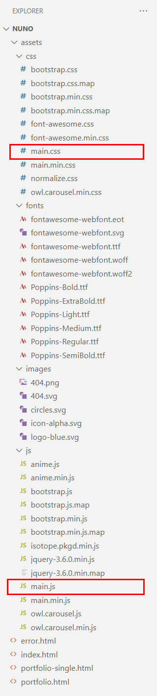

Introduction
Thank you so much for choosing our theme. We sincerely appreciate and really hope that you will like our theme!
Nuno is a simple, minimal portfolio theme, suitable for many who want to create their own website.
This document describes the location of the template files, the structure of the code in files with the extension html, css, js, the libraries used, and also provides useful links to libraries and services. We recommend that you read this document before contacting our support service.
For the convenience of working with the template, we have added comments to all file types.
File structure
The project files are arranged in a classic way. The main files are main.css and main.js.
